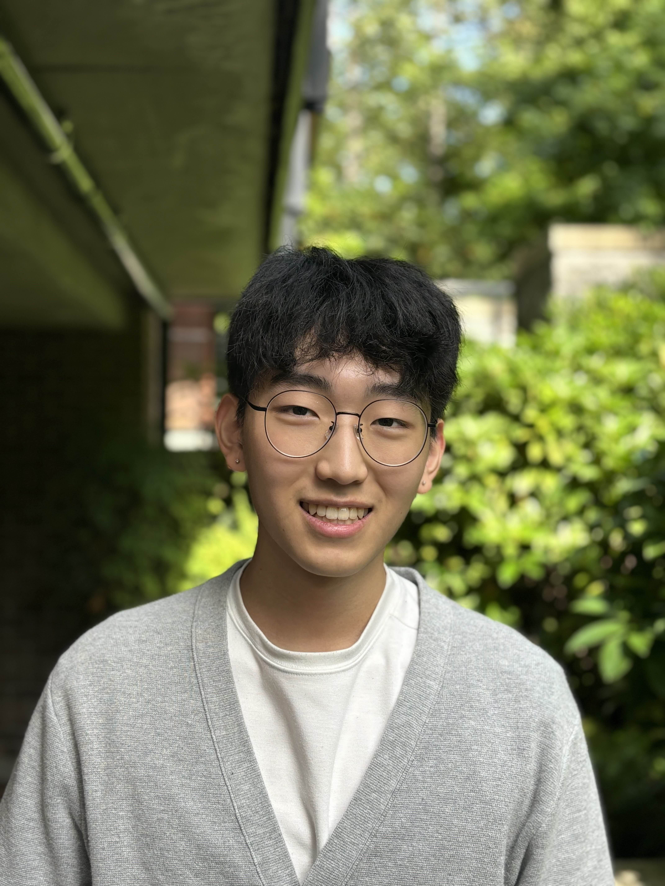

About
A little bit about me

Hi, I'm Sung Hyun Eun.
I'm a 3rd year mechatronics student at UBC, based in Vancouver! I am working towards entering robotics, and I am studying high-level autonomous control outside of school.
My work has explored various areas of robotics, which gives me a unique eclectic approach to robot design. This includes mechanical design, ROS2, PCB and electrical engineering, firmware, and policy training.
In my spare time, I love reading (Shoutout to The Economist's Espresso), playing basketball and table tennis with friends, and slowly learning to play the guitar.
Based in
Vancouver, Canada
Field of Study
Mechanical Engineering
Affiliation
The University of British Columbia
Open to
Collaborations!
Interests
Robotics
Reading (Typically Non-Fiction)
Basketball
Guitar
Learning